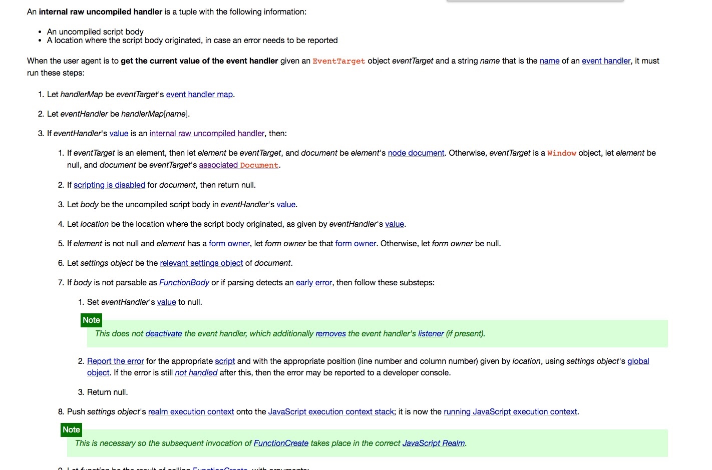

document.getElementById（）VS getElementById（）
根据规范，getElementById 是一个 DOM 方法，常以 document.getElementById(id) 的形式调用。但在如下代码中，两种调用方式前均未写 document. 。两个按钮一个可以工作，另一个不能，原因是什么？
<p id="text">Click the button and I'll be blue.</p>
<button onclick="getElementById('text').style.color = 'blue'">This works</button>
<button onclick="changeColor('text', 'blue')">This doesn't work</button>
<script>
function changeColor (id, color) {
getElementById(id).style.color = color
}
</script>

this
DOM事件的处理器
事件
JS和HTML交互是通过事件来实现的：预先通过对HTML元素添加监听器来定义事件，然后等事件触发，执行相关的代码。从设计模式上来说，是观察者模式。
在事件发生的时候，如点击按钮onclick事件，JS会生成一个event事件对象，当作入参传给处理函数，这个对象里包含了该事件的各种信息，而event对象的会在事件处理程序结束的时候销毁。
在事件处理函数中，容易混淆的就是this、event.currentTarget和event.target三个东东。
this指的是正在处理的HTML元素，也就是“绑定事务”的元素，和event.currentTarget永远是一致的。而event.target的值，它是事件的目标，是”触发事务“的元素，通常情况下（没有事件冒泡和事件捕获），绑定事件的元素和触发事件的元素是一样的，也就是event.currentTarget和event.target他们恒等于this，都是目标HTML元素：
var btn = document.getElementById("myBtn");
btn.onclick = function(event){
alert(event.currentTarget === this); //true
alert(event.target === this); //true
};
当绑定事件的元素和触发事件的元素不一样的时候，event.currentTarget和event.target的区别就明显了，看了下面这个例子就能理解了：
var btn = document.getElementById("myBtn");
document.body.onclick = function(event){
alert(event.currentTarget === this);//true
alert(event.currentTarget === document.body); //true
alert(this === document.body); //true
alert(event.target === btn); //点击btn的时候是true，点击body其他地方时是false
};
事件流
概念
浏览器端的JavaScript采用的是事件驱动的异步编程模型。在这种设置模式下，当文档、浏览器、元素或与之相关的对象发生某些事情时，浏览器就会产生对应的事件（event）。
DOM事件：当文档或浏览器窗口中发生变化时，我们可以通过监听或注册来预定某些事件的发生。事件是JavaScript和HTML DOM交互的基础。
DOM事件处理程序：事件是HTML文档执行某种操作时需要执行的动作，响应事件的函数就叫做事件处理程序，又叫做事件监听器。
DOM事件流：记录DOM事件发生的顺序。
事件处理程序
在W3C对DOM事件进行规范化之前的事件处理，如onclick、onload等，一般被称为DOM 0级事件处理程序。W3C在DOM2级文档规范中，包含了DOM事件（DOM Events）规范，则被称为DOM 2级事件处理程序。
DOM 0级事件处理程序
在DOM0级事件处理程序，事件名以'on'开头，因此click事件的事件处理程序就是onclick、load事件的事件处理程序就是onload。
内联事件
内联事件处理函数的作用域链
与其他函数不同，内联事件处理函数的作用域链从头部开始依次是：调用对象、该元素的 DOM 对象、该元素所属 FORM 的 DOM 对象（如果有）、document 对象、window 对象（全局对象）。
http://www.w3help.org/zh-cn/causes/SJ9009
https://www.cnblogs.com/rubylouvre/articles/1917958.html
https://zhuanlan.zhihu.com/p/24136312
https://snandy.iteye.com/blog/841055
https://github.com/GreyGao/hello-world/issues/5
https://segmentfault.com/q/1010000011637200
https://segmentfault.com/q/1010000008038186
https://segmentfault.com/q/1010000008014089